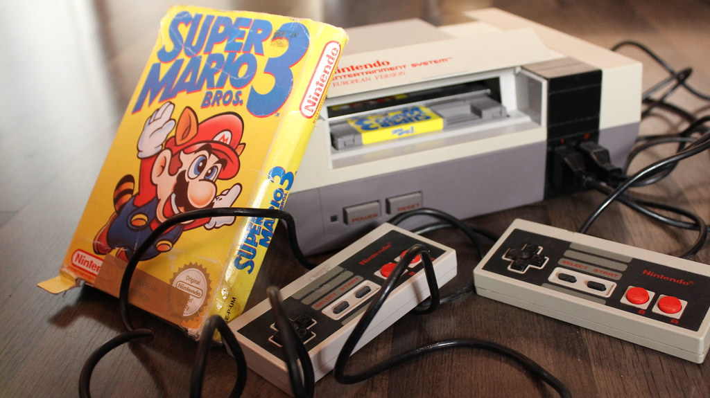
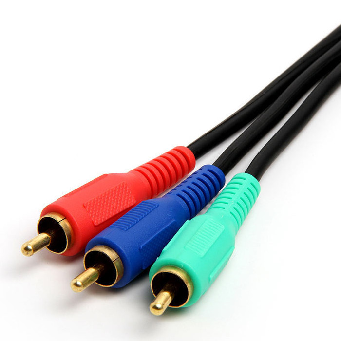
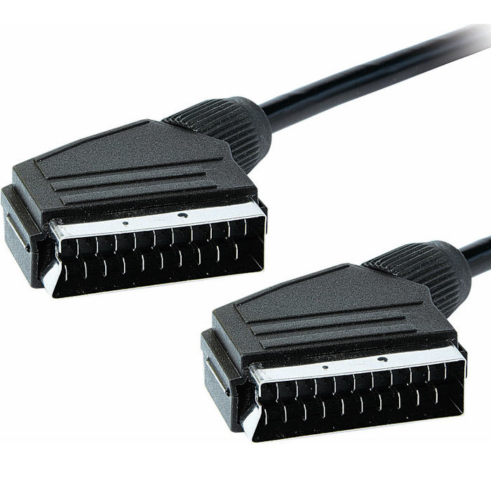

DisplayStation
Know your Options
What video outputs your console supports and what they hook up to.
Retro video game consoles have become more mainstream in recent years due to the cheaper nature of the second hand market and people's hoarding habits leaving old consoles tucked away in various hiding places. The biggest obstacle usually faced by would be retro gamers is the difficulty of playing older consoles on new TVs. Many of these machines were not meant to be played on anything newer than a CRT, and those are becoming increasingly more difficult to obtain.
Retro Consoles
Consoles that are considered 6th generation or older. This includes the Gamecube, PS2, XBox, and older consoles. These are usually distinguished by the lack of an HDMI port, and have an anologue output. Generally speaking most people will stick by this rule.
Cathode Ray Tube (CRT)

These are TVs that employed CRT technology to draw an image on a phosphor screen. Televisions using this technology accept anologue video signals and render them on the screen with minimal lag due to minimal image processing. This was sometimes used by game developers to make their games harder, utlizing the low input latency to increase difficulty in timing.
That being said, many modern TVs still contain legacy video inputs. You might recognize these as the Yellow/Red/White plugs that used to be common on video equipment from video recorders to plug-and-play TV games. These are Composite video cables, and are the most common variety of video cable. Old video game consoles originally only had composite outputs, with the Nintendo 64 and Playstation being the last consoles to only support composite output.
Some consoles had extra cables you could buy that had a higher picture quality if your tv supported it. These include Component and RGB SCART. These types of cables are referred to as RGB, since they send color information separate from the brightness information. As such, there are multiple pins and cables in each. Component cables are easy to spot since they have red, green, and blue cables along with red/white audio cables, while Scart cables had wierd shaped plugs with lots of pins in them. If you live in the US you likely haven't seen SCART before since only Europe and Japan adopted that standard.
Composite Video

Also commonly referred to as RCA cables, only because RCA made lots of these. The benefits of composite video are the low bandwidth needed to transmit video and the simplicity of having only one cable for video. The brightness and color information are encoded in the signal through one cable, so the quality take a sharp dive. Unless your TV has a nice sharpening filter, the image will appear "muddy" or washed out, with pixels being very fuzzy and blurry.
Component Video
These cables are common with more expensive electronics. HD Retrovision sells 3rd part component cables for many consoles now, and the increase in quality from composite is incredible. Three times the bandwidth means three times the clarity! Be wary, since not all TVs support these cables. CRT TVs rarely did, and even now many mordern TVs are phasing them out to make circut room for more digital sources.
RGB SCART
Many retro enthusiasts claim that SCART produces the sharpest and most vibrant image of any video cable out there. They are most likely right, considering the number of pins available, but at the end of the day it depends on the TV you use. US gamers will have almost never seen these since only PAL and Japanese markets adopted SCART, but there are conversion kits and mods available for popular TVs and consoles so you can go this route. For most players, component video will be hardly distinguishable from SCART.
Here is a quick table of popular consoles and their supported video outputs.
| Console | Year | Video Types |
|---|---|---|
| Atari 2600 | 1977 | RF / Coaxial |
| Nintendo Entertainment System | 1983 | RF / Composite |
| Sega Master System | 1985 | RF / Composite |
| Sega Genesis | 1988 | RF/ Composite |
| Super Nintendo Entertainment System | 1990 | RF / Composite / S-Video / Component |
| Sony Playstation | 1994 | RF / Composite / S-Video / Component |
| Nintendo 64 | 1996 | Composite / S-Video |
| Sega Dreamcast | 1998 | Composite / S-Video / VGA |
| Sony Playstation 2 | 2000 | RF / Composite / S-Video / Component / SCART* |
| Nintendo Gamecube | 2001 | Composite / S-Video / Component /SCART* |
| Microsoft XBOX | 2001 | Composite / S-Video* / Component* / SCART* |
| *Additional Accessories Required |